2026 National 5 Mathematics - Paper 2 marking instructions
Source: Scottish Qualifications Authority (SQA) / Qualifications Scotland. This is a StemInteract HTML companion, not an official HTML edition. Selectable text is supplied alongside original page images. Use the images or original PDF for equations, powers, fractions, vector notation, tables and diagrams; text extraction cannot fully preserve mathematical layout.
Jump to a question
PDF page 1
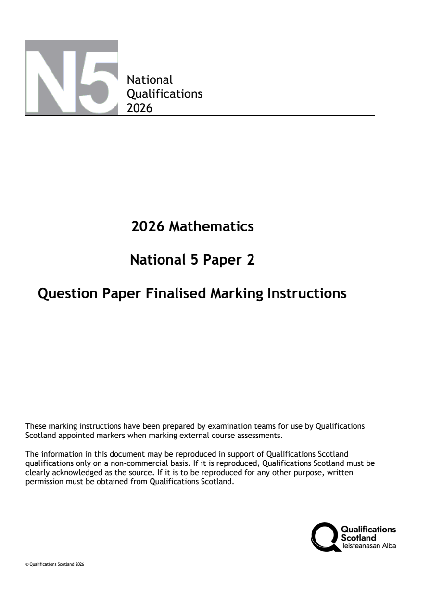
Selectable page text
National
Qualifications
2026
2026 Mathematics
National 5 Paper 2
Question Paper Finalised Marking Instructions
These marking instructions have been prepared by examination teams for use by Qualifications
Scotland appointed markers when marking external course assessments.
The information in this document may be reproduced in support of Qualifications Scotland
qualifications only on a non-commercial basis. If it is reproduced, Qualifications Scotland must be
clearly acknowledged as the source. If it is to be reproduced for any other purpose, written
permission must be obtained from Qualifications Scotland.
© Qualifications Scotland 2026PDF page 2
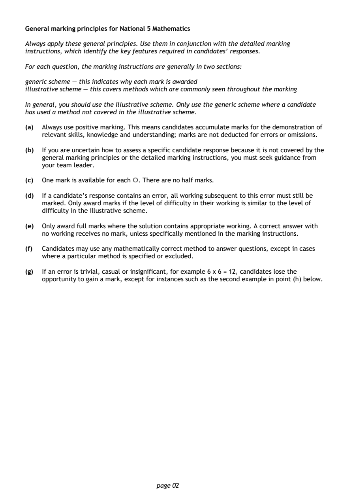
Selectable page text
General marking principles for National 5 Mathematics
Always apply these general principles. Use them in conjunction with the detailed marking
instructions, which identify the key features required in candidates’ responses.
For each question, the marking instructions are generally in two sections:
generic scheme — this indicates why each mark is awarded
illustrative scheme — this covers methods which are commonly seen throughout the marking
In general, you should use the illustrative scheme. Only use the generic scheme where a candidate
has used a method not covered in the illustrative scheme.
(a) Always use positive marking. This means candidates accumulate marks for the demonstration of
relevant skills, knowledge and understanding; marks are not deducted for errors or omissions.
(b) If you are uncertain how to assess a specific candidate response because it is not covered by the
general marking principles or the detailed marking instructions, you must seek guidance from
your team leader.
(c) One mark is available for each . There are no half marks.
(d) If a candidate’s response contains an error, all working subsequent to this error must still be
marked. Only award marks if the level of difficulty in their working is similar to the level of
difficulty in the illustrative scheme.
(e) Only award full marks where the solution contains appropriate working. A correct answer with
no working receives no mark, unless specifically mentioned in the marking instructions.
(f) Candidates may use any mathematically correct method to answer questions, except in cases
where a particular method is specified or excluded.
(g) If an error is trivial, casual or insignificant, for example 6 x 6 = 12, candidates lose the
opportunity to gain a mark, except for instances such as the second example in point (h) below.
page 02PDF page 3
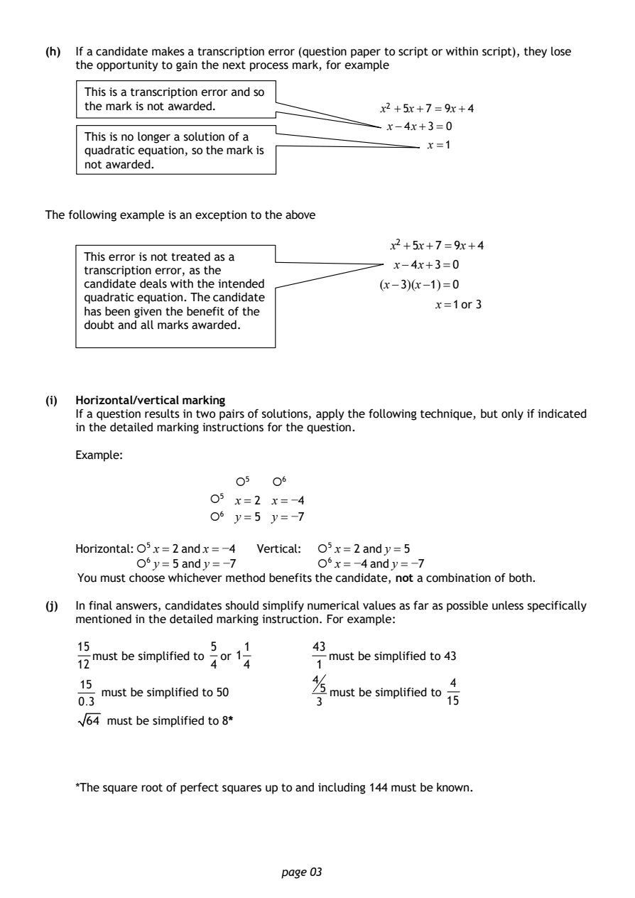
Selectable page text
(h) If a candidate makes a transcription error (question paper to script or within script), they lose
the opportunity to gain the next process mark, for example
This is a transcription error and so
the mark is not awarded. x² + 5x + 7 = 9x + 4
x − 4 x + 3 = 0
This is no longer a solution of a
x = 1
quadratic equation, so the mark is
not awarded.
The following example is an exception to the above
x² + 5x + 7 = 9x + 4
This error is not treated as a
x − 4 x + 3 = 0
transcription error, as the
candidate deals with the intended (x − 3)(x −1) = 0
quadratic equation. The candidate
x = 1 or 3
has been given the benefit of the
doubt and all marks awarded.
(i) Horizontal/vertical marking
If a question results in two pairs of solutions, apply the following technique, but only if indicated
in the detailed marking instructions for the question.
Example:
5 6
5 x = 2 x = −4
6 y = 5 y = −7
Horizontal: ⁵ x = 2 and x = −4 Vertical: 5 x = 2 and y = 5
6 y = 5 and y = −7 6 x = −4 and y = −7
You must choose whichever method benefits the candidate, not a combination of both.
(j) In final answers, candidates should simplify numerical values as far as possible unless specifically
mentioned in the detailed marking instruction. For example:
15 5 1 43
must be simplified to or 1 must be simplified to 43
12 4 4 1
15 4 4
5
must be simplified to 50 must be simplified to
0.3 3 15
64 must be simplified to 8*
*The square root of perfect squares up to and including 144 must be known.
page 03PDF page 4
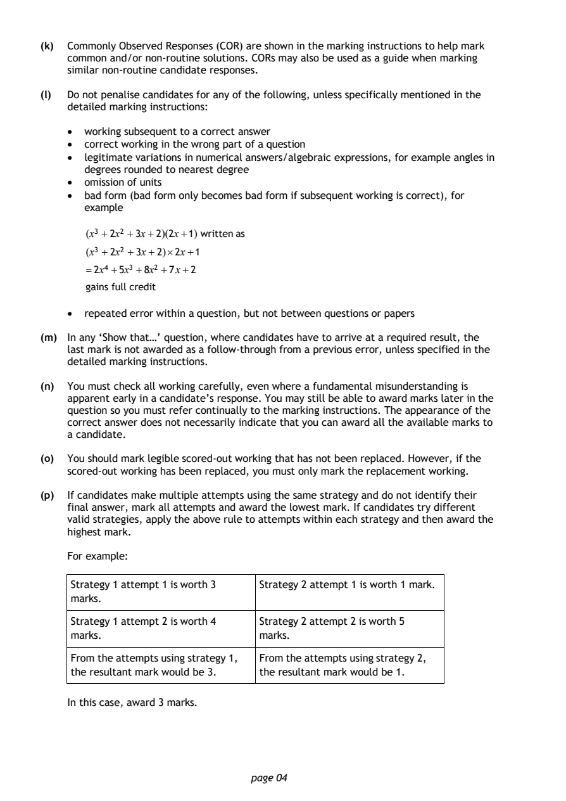
Selectable page text
(k) Commonly Observed Responses (COR) are shown in the marking instructions to help mark
common and/or non-routine solutions. CORs may also be used as a guide when marking
similar non-routine candidate responses.
(l) Do not penalise candidates for any of the following, unless specifically mentioned in the
detailed marking instructions:
• working subsequent to a correct answer
• correct working in the wrong part of a question
• legitimate variations in numerical answers/algebraic expressions, for example angles in
degrees rounded to nearest degree
• omission of units
• bad form (bad form only becomes bad form if subsequent working is correct), for
example
(x³ + 2x² + 3x + 2)(2x + 1) written as
(x³ + 2x² + 3x + 2) × 2x + 1
= 2x⁴ + 5x³ + 8x² + 7 x + 2
gains full credit
• repeated error within a question, but not between questions or papers
(m) In any ‘Show that…’ question, where candidates have to arrive at a required result, the
last mark is not awarded as a follow-through from a previous error, unless specified in the
detailed marking instructions.
(n) You must check all working carefully, even where a fundamental misunderstanding is
apparent early in a candidate’s response. You may still be able to award marks later in the
question so you must refer continually to the marking instructions. The appearance of the
correct answer does not necessarily indicate that you can award all the available marks to
a candidate.
(o) You should mark legible scored-out working that has not been replaced. However, if the
scored-out working has been replaced, you must only mark the replacement working.
(p) If candidates make multiple attempts using the same strategy and do not identify their
final answer, mark all attempts and award the lowest mark. If candidates try different
valid strategies, apply the above rule to attempts within each strategy and then award the
highest mark.
For example:
Strategy 1 attempt 1 is worth 3 Strategy 2 attempt 1 is worth 1 mark.
marks.
Strategy 1 attempt 2 is worth 4 Strategy 2 attempt 2 is worth 5
marks. marks.
From the attempts using strategy 1, From the attempts using strategy 2,
the resultant mark would be 3. the resultant mark would be 1.
In this case, award 3 marks.
page 04PDF page 5
Paper 2, Question 1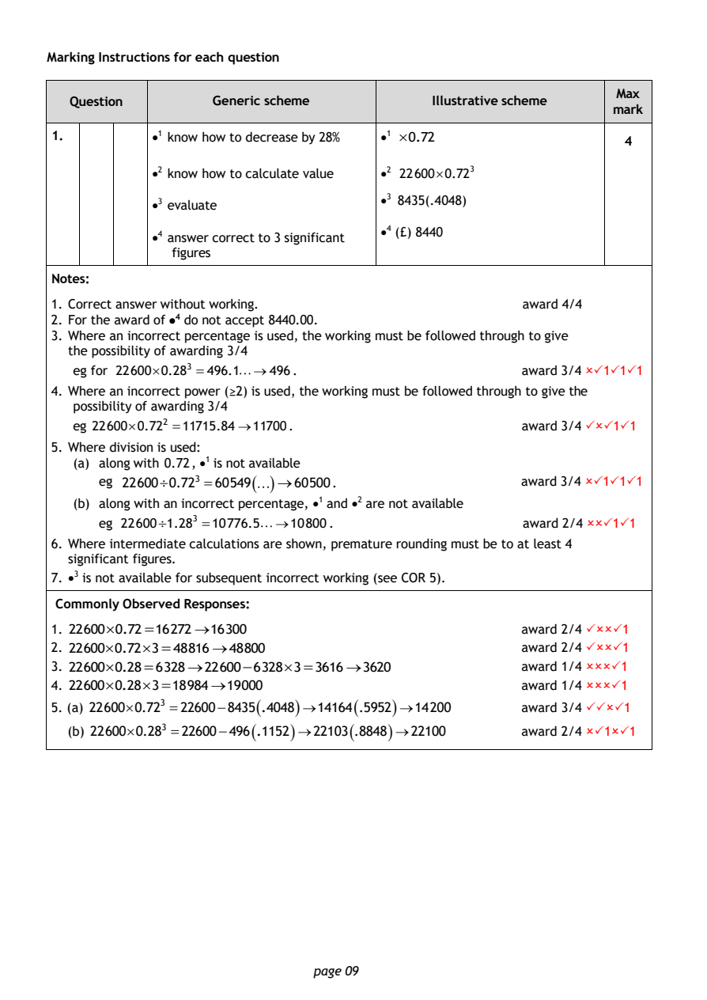
Selectable page text
Marking Instructions for each question
Max
Question Generic scheme Illustrative scheme
mark
1. •1 know how to decrease by 28% •1 ×0.72
4
•2 know how to calculate value •2 22600×0.72³
•3 evaluate •3 8435(.4048)
•4 (£) 8440
•4 answer correct to 3 significant
figures
Notes:
1. Correct answer without working. award 4/4
2. For the award of •⁴ do not accept 8440.00.
3. Where an incorrect percentage is used, the working must be followed through to give
the possibility of awarding 3/4
eg for 22600×0.28³ =496.1 →496. award 3/4 111
4. Where an incorrect power (≥2) is used, the working must be followed through to give the
possibility of awarding 3/4
eg 22600×0.72² =11715.84→11700. award 3/4 11
5. Where division is used:
(a) along with 0.72 , •¹ is not available
eg 22600÷0.72³ =60549( )→60500. award 3/4 111
(b) along with an incorrect percentage, •¹ and •² are not available
eg 22600÷1.28³ =10776.5 →10800. award 2/4 11
6. Where intermediate calculations are shown, premature rounding must be to at least 4
significant figures.
7. •³ is not available for subsequent incorrect working (see COR 5).
Commonly Observed Responses:
1. 22600×0.72=16272→16300 award 2/4 1
2. 22600×0.72×3=48816→48800 award 2/4 1
3. 22600×0.28=6328→22600−6328×3=3616→3620 award 1/4 1
4. 22600×0.28×3=18984→19000 award 1/4 1
5. (a) 22600×0.72³ =22600−8435(.4048)→14164(.5952)→14200 award 3/4 1
(b) 22600×0.28³ =22600−496(.1152)→22103(.8848)→22100 award 2/4 11
page 09PDF page 6
Paper 2, Question 2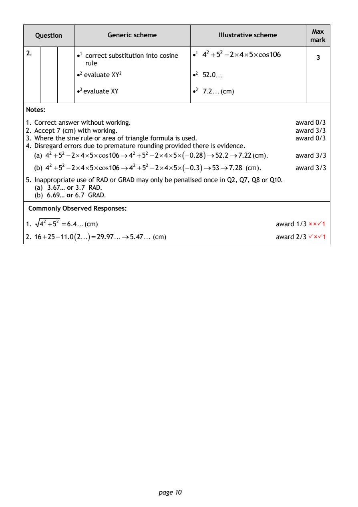
Selectable page text
Max
Question Generic scheme Illustrative scheme
mark
2. •1 correct substitution into cosine •1 4²+5²−2×4×5×cos106
3
rule
•2 evaluate XY² •2 52.0
•3 evaluate XY •3 7.2 (cm)
Notes:
1. Correct answer without working. award 0/3
2. Accept 7 (cm) with working. award 3/3
3. Where the sine rule or area of triangle formula is used. award 0/3
4. Disregard errors due to premature rounding provided there is evidence.
(a) 4² +5² −2×4×5×cos106→4² +5² −2×4×5×(−0.28)→52.2→7.22(cm). award 3/3
(b) 4² +5² −2×4×5×cos106→4² +5² −2×4×5×(−0.3)→53→7.28 (cm). award 3/3
5. Inappropriate use of RAD or GRAD may only be penalised once in Q2, Q7, Q8 or Q10.
(a) 3.67… or 3.7 RAD.
(b) 6.69… or 6.7 GRAD.
Commonly Observed Responses:
1. 4² +5² =6.4 (cm) award 1/3 1
2. 16+25−11.0(2 ) =29.97 →5.47 (cm) award 2/3 1
page 10PDF page 7
Paper 2, Question 3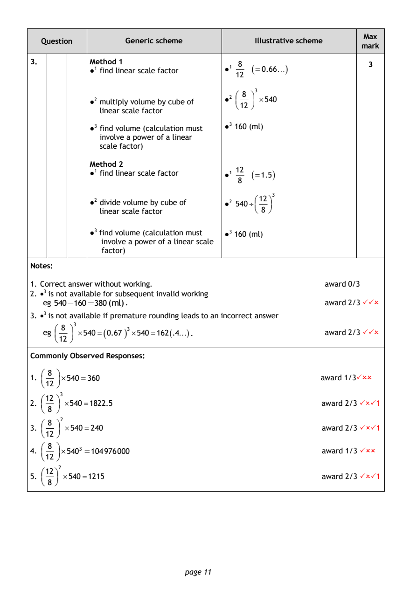
Selectable page text
Max
Question Generic scheme Illustrative scheme
mark
3. Method 1
8 3
●1 find linear scale factor ●1 (=0.66 )
12
8 ³
●2 multiply volume by cube of ●2 ×540
12
linear scale factor
●3 find volume (calculation must ●3 160 (ml)
involve a power of a linear
scale factor)
Method 2
12
●1 find linear scale factor ●1 (=1.5)
8
●2 divide volume by cube of ●2 540÷ 12 ³
linear scale factor 8
●3 find volume (calculation must ●3 160 (ml)
involve a power of a linear scale
factor)
Notes:
1. Correct answer without working. award 0/3
2. •³ is not available for subsequent invalid working
eg 540−160=380(ml). award 2/3
3. •³ is not available if premature rounding leads to an incorrect answer
8 ³
eg ×540=(0.67 )³×540=162(.4 ). award 2/3
12
Commonly Observed Responses:
8
1. ×540=360 award 1/3
12
12 ³
2. ×540=1822.5 award 2/3 1
8
8 ²
3. ×540=240 award 2/3 1
12
8
4. ×540³ =104976000 award 1/3
12
12²
5. ×540=1215 award 2/3 1
8
page 11PDF page 8
Paper 2, Question 4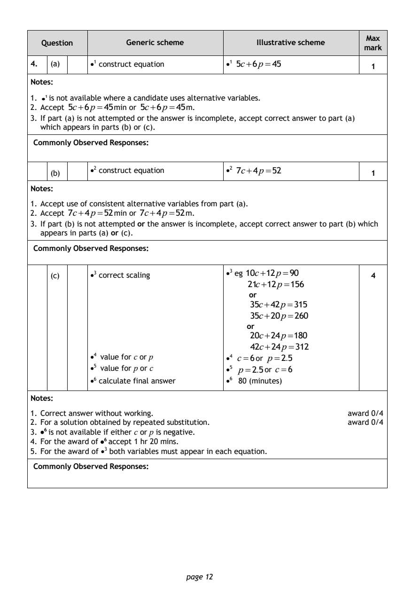
Selectable page text
Max
Question Generic scheme Illustrative scheme
mark
4. (a) •1 construct equation •1 5c+6p=45
1
Notes:
1. •¹is not available where a candidate uses alternative variables.
2. Accept 5c+6p=45min or 5c+6p=45m.
3. If part (a) is not attempted or the answer is incomplete, accept correct answer to part (a)
which appears in parts (b) or (c).
Commonly Observed Responses:
•2 construct equation •2 7c+4p=52
(b) 1
Notes:
1. Accept use of consistent alternative variables from part (a).
2. Accept 7c+4p=52min or 7c+4p=52m.
3. If part (b) is not attempted or the answer is incomplete, accept correct answer to part (b) which
appears in parts (a) or (c).
Commonly Observed Responses:
(c) •3 correct scaling •3 eg 10c+12p=90 4
21c+12p=156
or
35c+42p=315
35c+20p=260
or
20c+24p=180
42c+24p=312
•4 value for c or p •4 c=6or p=2.5
•5 value for p or c •5 p=2.5or c=6
•6 calculate final answer •6 80 (minutes)
Notes:
1. Correct answer without working. award 0/4
2. For a solution obtained by repeated substitution. award 0/4
3. •⁶ is not available if either c or p is negative.
4. For the award of •⁶ accept 1 hr 20 mins.
5. For the award of •³ both variables must appear in each equation.
Commonly Observed Responses:
page 12PDF page 9
Paper 2, Question 5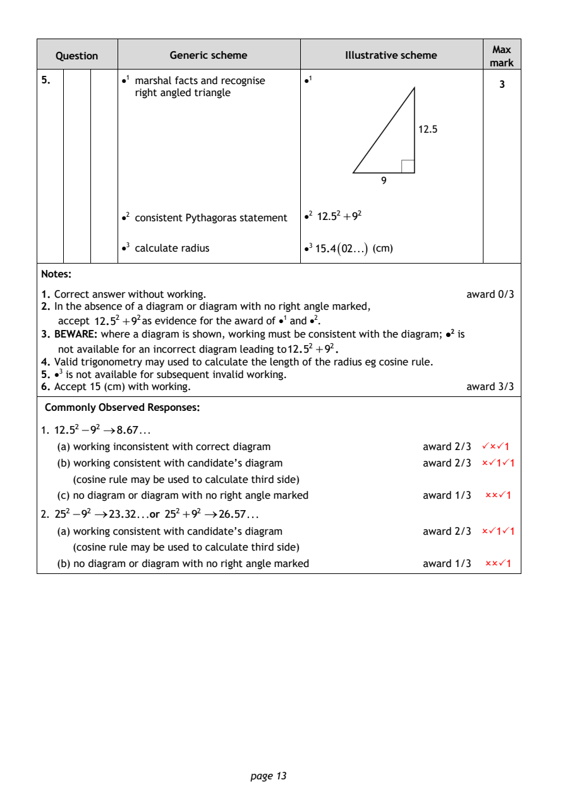
Selectable page text
Max
Question Generic scheme Illustrative scheme
mark
5. •1 marshal facts and recognise •1
3
right angled triangle
•2 consistent Pythagoras statement •2 12.5²+9²
•3 calculate radius •3 15.4(02 ) (cm)
Notes:
1. Correct answer without working. award 0/3
2. In the absence of a diagram or diagram with no right angle marked,
accept 12.5² +9²as evidence for the award of •¹ and •².
3. BEWARE: where a diagram is shown, working must be consistent with the diagram; •² is
not available for an incorrect diagram leading to12.5² +9².
4. Valid trigonometry may used to calculate the length of the radius eg cosine rule.
5. •³ is not available for subsequent invalid working.
6. Accept 15 (cm) with working. award 3/3
Commonly Observed Responses:
1. 12.5²−9² →8.67
(a) working inconsistent with correct diagram award 2/31
(b) working consistent with candidate’s diagram award 2/311
(cosine rule may be used to calculate third side)
(c) no diagram or diagram with no right angle marked award 1/3 1
2. 25²−9² →23.32 or 25²+9² →26.57
(a) working consistent with candidate’s diagram award 2/311
(cosine rule may be used to calculate third side)
(b) no diagram or diagram with no right angle marked award 1/3 1
page 13PDF page 10
Paper 2, Question 6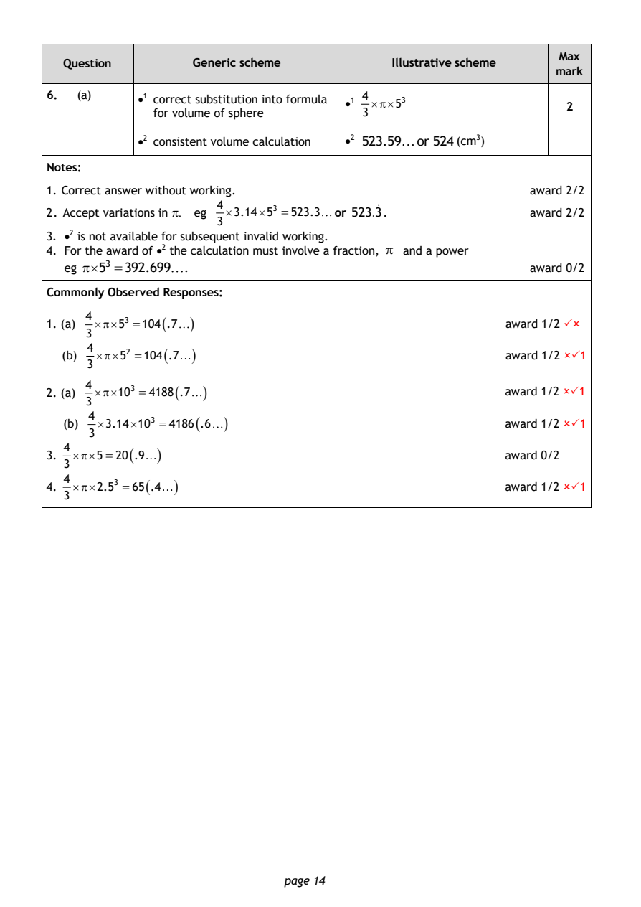
Selectable page text
Max
Question Generic scheme Illustrative scheme
mark
6. (a) •1 correct substitution into formula •1 4 ×π×5³ 2
for volume of sphere 3
•2 consistent volume calculation •2 523.59 or 524(cm³)
Notes:
1. Correct answer without working. award 2/2
4
2. Accept variations in π. eg ×3.14×5³ =523.3 or 523.3 . award 2/2
3
3. •² is not available for subsequent invalid working.
4. For the award of •² the calculation must involve a fraction, π and a power
eg π×5³ =392.699 . award 0/2
Commonly Observed Responses:
4
1. (a) ×π×5³ =104(.7 ) award 1/2
3
4
(b) ×π×5² =104(.7 ) award 1/2 1
3
4
2. (a) ×π×10³ =4188(.7 ) award 1/2 1
3
4
(b) ×3.14×10³ =4186(.6 ) award 1/2 1
3
4
3. ×π×5=20(.9 ) award 0/2
3
4
4. ×π×2.5³ =65(.4 ) award 1/2 1
3
page 14PDF page 11
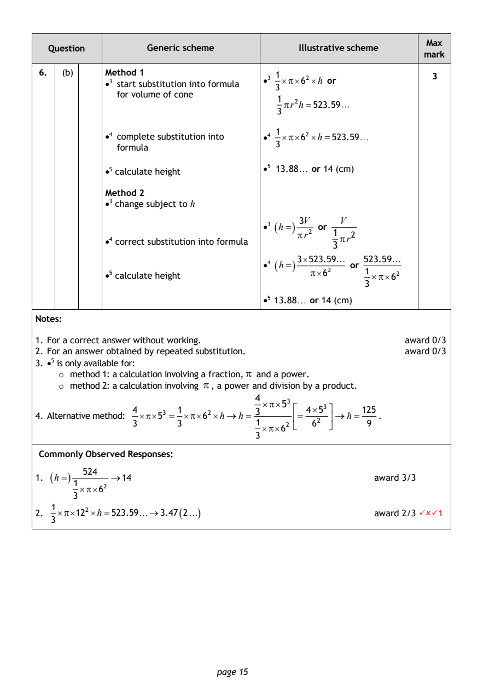
Selectable page text
Max
Question Generic scheme Illustrative scheme
mark
6. (b) Method 1 1 3
•3 start substitution into formula •3 ×π×6²×h or
3
for volume of cone
1
πr²h=523.59
3
1
•4 complete substitution into •4 ×π×6²×h=523.59
3
formula
•5 calculate height •5 13.88 or 14 (cm)
Method 2
•3 change subject to h
3V V
•3 (h=) or
πr² 1 2
πr
•4 correct substitution into formula
3
3×523.59 523.59
•4 (h=) or
•5 calculate height π×6² 1 ×π×6²
3
•5 13.88 or 14 (cm)
Notes:
1. For a correct answer without working. award 0/3
2. For an answer obtained by repeated substitution. award 0/3
3. •⁵ is only available for:
o method 1: a calculation involving a fraction,π and a power.
o method 2: a calculation involving π, a power and division by a product.
4
×π×5³
4 1 3 4×5³ 125
4. Alternative method: ×π×5³ = ×π×6²×h→h= = →h= .
3 3 1 ×π×6² 6² 9
3
Commonly Observed Responses:
524
1. (h=) →14 award 3/3
1
×π×6²
3
1
2. ×π×12²×h=523.59→3.47(2 ) award 2/3 1
3
page 15PDF page 12
Paper 2, Question 7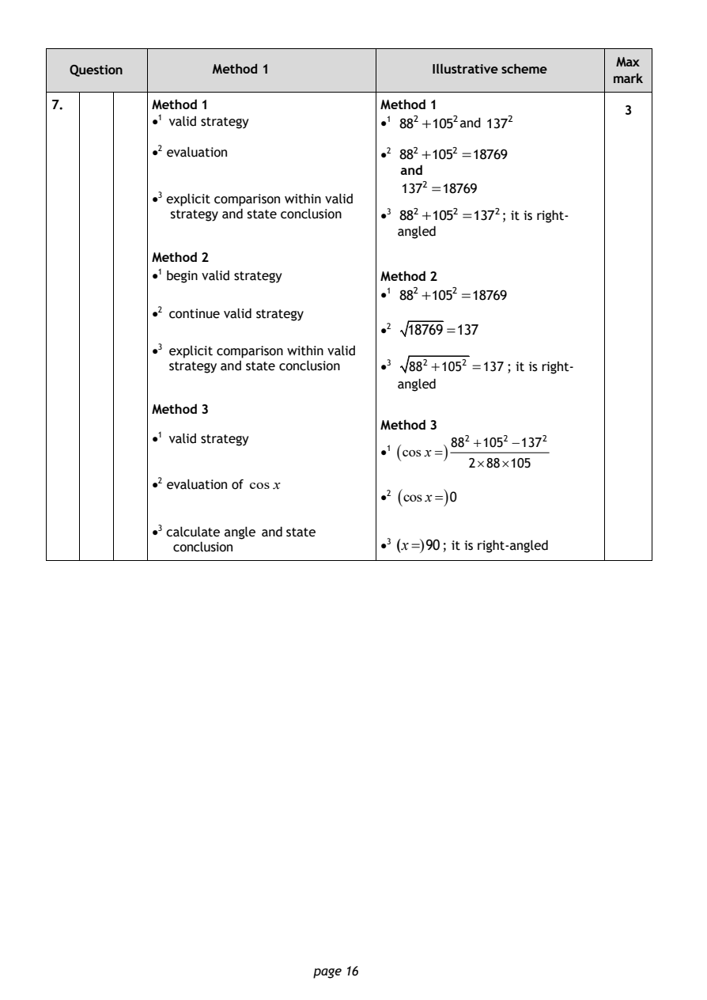
Selectable page text
Max
Question Method 1 Illustrative scheme
mark
7. Method 1 Method 1
3
•1 valid strategy •1 88² +105²and 137²
•2 evaluation •2 88²+105² =18769
and
137² =18769
•3 explicit comparison within valid
strategy and state conclusion •3 88²+105² =137²; it is right-
angled
Method 2
•1 begin valid strategy Method 2
•1 88²+105² =18769
•2 continue valid strategy
•2 18769 =137
•3 explicit comparison within valid
strategy and state conclusion •3 88² +105² =137; it is right-
angled
Method 3
Method 3
•1 valid strategy
88² +105² −137²
•1 (cos x=)
2×88×105
•2 evaluation of cos x
•2 (cos x=)0
•3 calculate angle and state
conclusion •3 (x=)90; it is right-angled
page 16PDF page 13
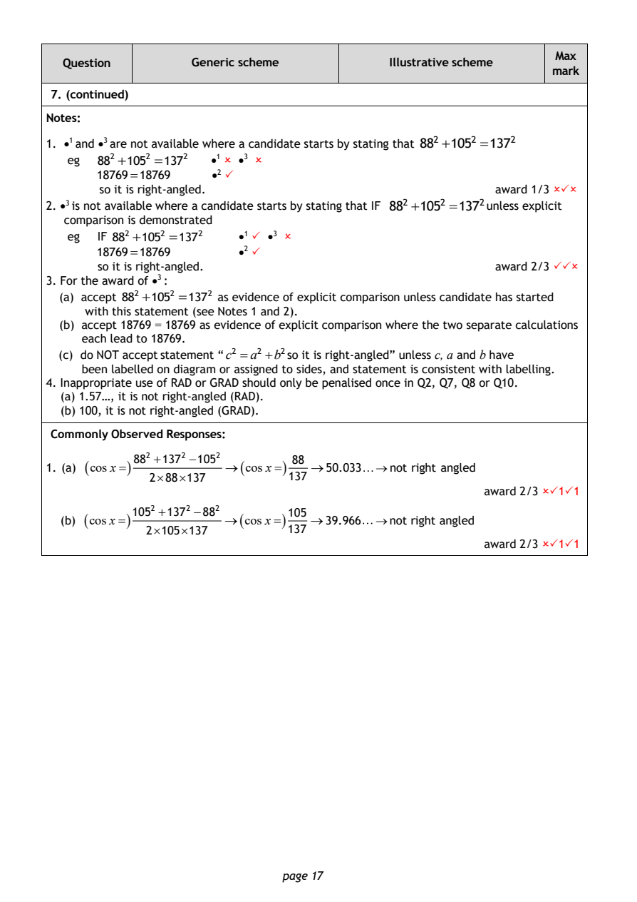
Selectable page text
Max
Question Generic scheme Illustrative scheme
mark
7. (continued)
Notes:
1. •¹ and •³ are not available where a candidate starts by stating that 88²+105² =137²
eg 88²+105² =137² •1 •3
18769=18769 •2
so it is right-angled. award 1/3
2. •³ is not available where a candidate starts by stating that IF 88²+105² =137²unless explicit
comparison is demonstrated
eg IF 88²+105² =137² •1 •3
18769=18769 •2
so it is right-angled. award 2/3
3. For the award of •³ :
(a) accept 88²+105² =137² as evidence of explicit comparison unless candidate has started
with this statement (see Notes 1 and 2).
(b) accept 18769 = 18769 as evidence of explicit comparison where the two separate calculations
each lead to 18769.
(c) do NOT accept statement “c² =a² +b²so it is right-angled” unless c, a and b have
been labelled on diagram or assigned to sides, and statement is consistent with labelling.
4. Inappropriate use of RAD or GRAD should only be penalised once in Q2, Q7, Q8 or Q10.
(a) 1.57…, it is not right-angled (RAD).
(b) 100, it is not right-angled (GRAD).
Commonly Observed Responses:
88² +137² −105² 88
1. (a) (cos x=) →(cos x=) →50.033 →not right angled
2×88×137 137
award 2/3 11
105² +137² −88² 105
(b) (cos x=) →(cos x=) →39.966 →not right angled
2×105×137 137
award 2/3 11
page 17PDF page 14
Paper 2, Question 8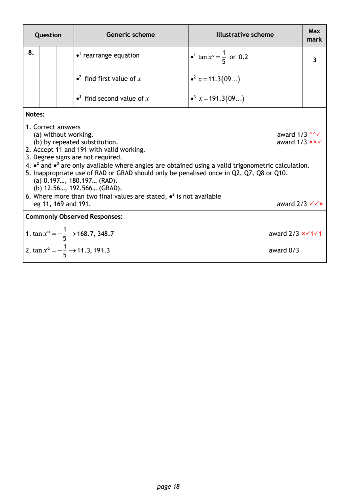
Selectable page text
Max
Question Generic scheme Illustrative scheme
mark
8. 1
•1 rearrange equation •1 tanx°= or 0.2
3
5
•2 find first value of x •2 x=11.3(09 )
•3 find second value of x •3 x=191.3(09 )
Notes:
1. Correct answers
(a) without working. award 1/3 ^^
(b) by repeated substitution. award 1/3
2. Accept 11 and 191 with valid working.
3. Degree signs are not required.
4. •² and •³ are only available where angles are obtained using a valid trigonometric calculation.
5. Inappropriate use of RAD or GRAD should only be penalised once in Q2, Q7, Q8 or Q10.
(a) 0.197…, 180.197… (RAD).
(b) 12.56…, 192.566… (GRAD).
6. Where more than two final values are stated, •³ is not available
eg 11, 169 and 191. award 2/3
Commonly Observed Responses:
1
1.tanx°=− →168.7, 348.7 award 2/3 11
5
1
2.tanx°=− →11.3,191.3 award 0/3
5
page 18PDF page 15
Paper 2, Question 9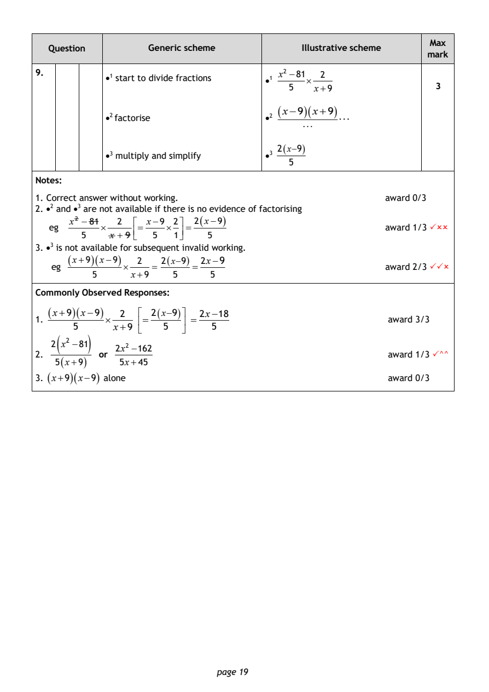
Selectable page text
Max
Question Generic scheme Illustrative scheme
mark
9. •1 start to divide fractions •1 x² −81 × 2
5 x+9 3
(x−9)(x+9)
•2 •2 factorise •2
2(x−9)
•3 multiply and simplify •3
5
Notes:
1. Correct answer without working. award 0/3
2. •² and •³ are not available if there is no evidence of factorising
x² −81 2 x−9 2 2(x−9)
eg × = × = award 1/3
5 x + 9 5 1 5
3. •³ is not available for subsequent invalid working.
(x+9)(x−9) 2 2(x−9) 2x−9
eg × = = award 2/3
5 x+9 5 5
Commonly Observed Responses:
(x+9)(x−9) 2 2(x−9) 2x−18
1. × = = award 3/3
5 x+9 5 5
( )
2 x² −81
2x² −162
2. or award 1/3 ^^
5(x+9) 5x+45
3.
(x+9)(x−9)
alone award 0/3
page 19PDF page 16
Paper 2, Question 10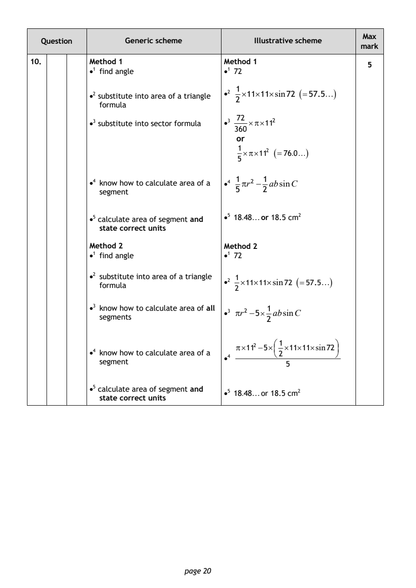
Selectable page text
Max
Question Generic scheme Illustrative scheme
mark
10. Method 1 Method 1
5
•1 find angle •1 72
1
•2 substitute into area of a triangle •2 ×11×11×sin72 (=57.5 )
2
formula
72
•3 substitute into sector formula •3 ×π×11²
360
or
1
×π×11² (=76.0 )
5
1 1
•4 know how to calculate area of a •4 πr² − absinC
5 2
segment
•5 calculate area of segment and •5 18.48 or 18.5 cm²
state correct units
Method 2 Method 2
•1 find angle •1 72
•2 substitute into area of a triangle 1
•2 ×11×11×sin72 (=57.5 )
formula
2
•3 know how to calculate area of all 1
•3 πr² −5× absinC
segments 2
1
π×11²−5× ×11×11×sin72
•4 know how to calculate area of a 2
•4
segment
5
•5 calculate area of segment and
•5 18.48 or 18.5 cm²
state correct units
page 20PDF page 17
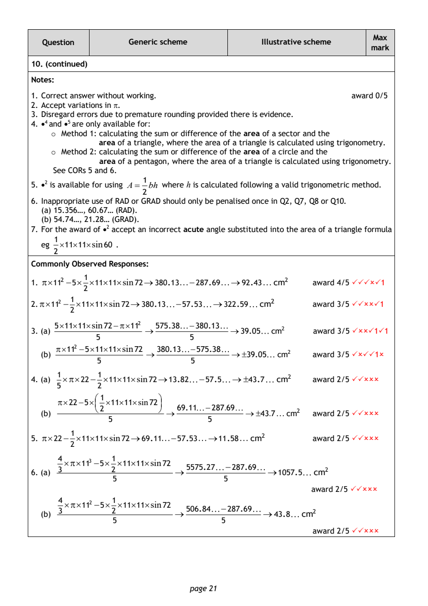
Selectable page text
Max
Question Generic scheme Illustrative scheme
mark
10. (continued)
Notes:
1. Correct answer without working. award 0/5
2. Accept variations in π.
3. Disregard errors due to premature rounding provided there is evidence.
4. •⁴ and •⁵ are only available for:
o Method 1: calculating the sum or difference of the area of a sector and the
area of a triangle, where the area of a triangle is calculated using trigonometry.
o Method 2: calculating the sum or difference of the area of a circle and the
area of a pentagon, where the area of a triangle is calculated using trigonometry.
See CORs 5 and 6.
1
5. •² is available for using A= bh where h is calculated following a valid trigonometric method.
2
6. Inappropriate use of RAD or GRAD should only be penalised once in Q2, Q7, Q8 or Q10.
(a) 15.356…, 60.67… (RAD).
(b) 54.74…, 21.28… (GRAD).
7. For the award of •² accept an incorrect acute angle substituted into the area of a triangle formula
1
eg ×11×11×sin60 .
2
Commonly Observed Responses:
1
1. π×11² −5× ×11×11×sin72→380.13−287.69 →92.43 cm² award 4/5 1
2
1
2.π×11² − ×11×11×sin72→380.13−57.53 →322.59 cm² award 3/5 1
2
5×11×11×sin72−π×11² 575.38−380.13
3. (a) → →39.05 cm² award 3/5 11
5 5
π×11² −5×11×11×sin72 380.13−575.38
(b) → →±39.05 cm² award 3/5 1
5 5
1 1
4. (a) ×π×22− ×11×11×sin72→13.82−57.5 →±43.7 cm² award 2/5
5 2
1
π×22−5× ×11×11×sin72
2 69.11−287.69
(b) → →±43.7 cm² award 2/5
5 5
1
5. π×22− ×11×11×sin72→69.11−57.53 →11.58 cm² award 2/5
2
4 1
×π×11³ −5× ×11×11×sin72
3 2
5575.27−287.69
6. (a) → →1057.5 cm²
5 5
award 2/5
4 1
×π×11² −5× ×11×11×sin72
3 2
506.84−287.69
(b) → →43.8 cm²
5 5
award 2/5
page 21PDF page 18
Paper 2, Question 11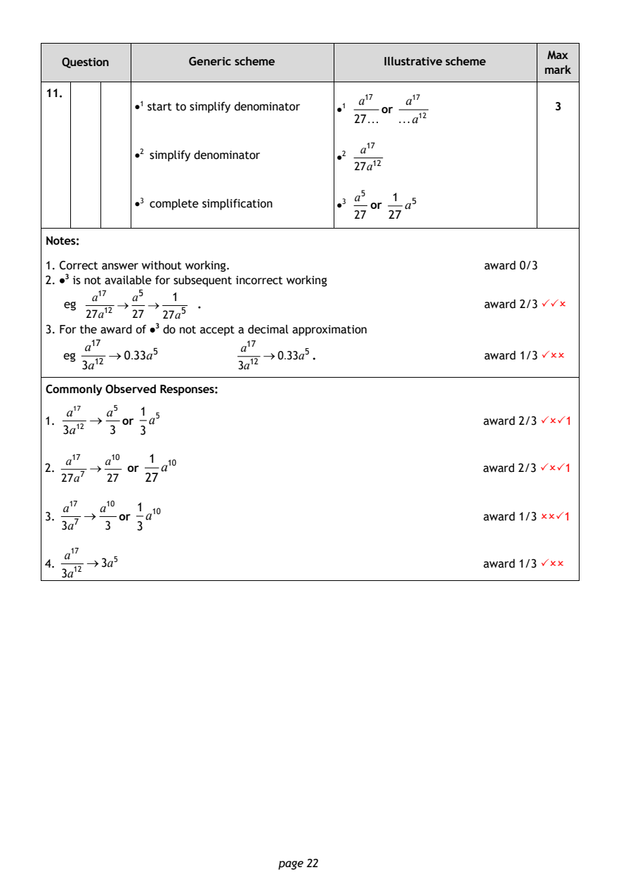
Selectable page text
Max
Question Generic scheme Illustrative scheme
mark
11.
a¹⁷ a¹⁷
•1 start to simplify denominator •1 or 3
27 a¹²
a¹⁷
•2 simplify denominator •2
27a¹²
a⁵ 1
•3 complete simplification •3 or a⁵
27 27
Notes:
1. Correct answer without working. award 0/3
2. •³ is not available for subsequent incorrect working
a¹⁷ a⁵ 1
eg → → . award 2/3
27a¹² 27 27a⁵
3. For the award of •³ do not accept a decimal approximation
a¹⁷ a¹⁷
eg →0.33a⁵ →0.33a⁵. award 1/3
3a¹² 3a¹²
Commonly Observed Responses:
a¹⁷ a⁵ 1
1. → or a⁵ award 2/3 1
3a¹² 3 3
a¹⁷ a¹⁰ 1
2. → or a¹⁰ award 2/3 1
27a⁷ 27 27
a¹⁷ a¹⁰ 1
3. → or a¹⁰ award 1/3 1
3a⁷ 3 3
a¹⁷
4. →3a⁵ award 1/3
3a¹²
page 22PDF page 19
Paper 2, Question 12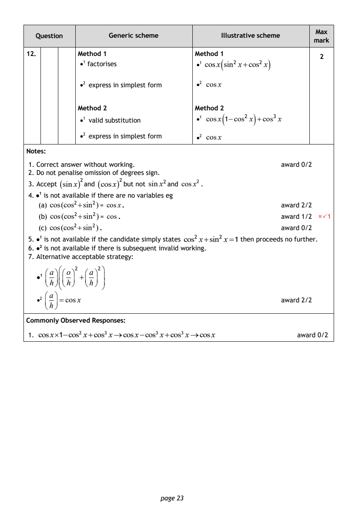
Selectable page text
Max
Question Generic scheme Illustrative scheme
mark
12. Method 1 Method 1
2
( )
•1 factorises •1 cosx sin² x+cos² x
•2 express in simplest form •2 cosx
Method 2 Method 2
( )
•1 valid substitution •1 cosx 1−cos² x +cos³ x
•2 express in simplest form •2 cosx
Notes:
1. Correct answer without working. award 0/2
2. Do not penalise omission of degrees sign.
3. Accept (sinx)²and (cosx)²but not sinx²and cosx².
4. •¹ is not available if there are no variables eg
(a) cos(cos²+sin²)= cosx. award 2/2
(b) cos(cos²+sin²)= cos. award 1/2 1
(c) cos(cos²+sin²). award 0/2
5. •¹ is not available if the candidate simply states cos² x+sin² x=1 then proceeds no further.
6. •² is not available if there is subsequent invalid working.
7. Alternative acceptable strategy:
a o² a²
•1
+
h h h
a
•2 =cosx award 2/2
h
Commonly Observed Responses:
1. cosx×1−cos² x+cos³x→cosx−cos³x+cos³x→cosx award 0/2
page 23PDF page 20
Paper 2, Question 13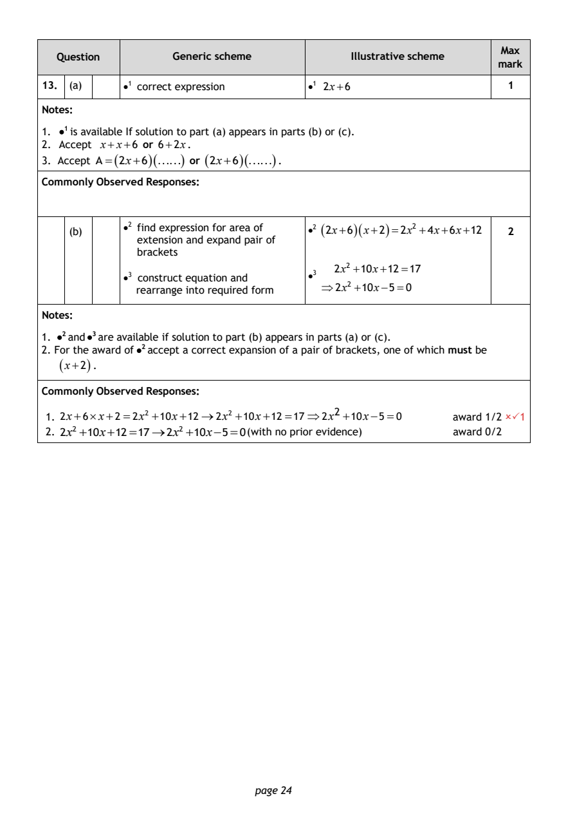
Selectable page text
Max
Question Generic scheme Illustrative scheme
mark
13. (a) •1 correct expression •1 2x+6 1
Notes:
1. •¹ is available If solution to part (a) appears in parts (b) or (c).
2. Accept x+x+6 or 6+2x.
3. Accept A =(2x+6)( ) or (2x+6)( ) .
Commonly Observed Responses:
(b) •2 find expression for area of •2 (2x+6)(x+2)=2x²+4x+6x+12 2
extension and expand pair of
brackets
2x² +10x+12=17
•3 construct equation and •3
rearrange into required form
⇒2x² +10x−5=0
Notes:
1. •² and •³ are available if solution to part (b) appears in parts (a) or (c).
2. For the award of •² accept a correct expansion of a pair of brackets, one of which must be
(x+2)
.
Commonly Observed Responses:
2
1. 2x+6×x+2=2x² +10x+12→2x² +10x+12=17⇒2x +10x−5=0 award 1/2 1
2. 2x²+10x+12=17→2x²+10x−5=0(with no prior evidence) award 0/2
page 24PDF page 21
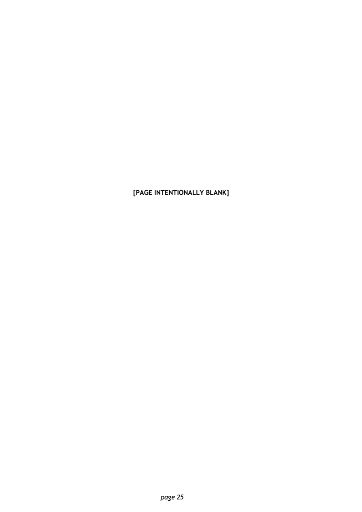
Selectable page text
[PAGE INTENTIONALLY BLANK]
page 25PDF page 22
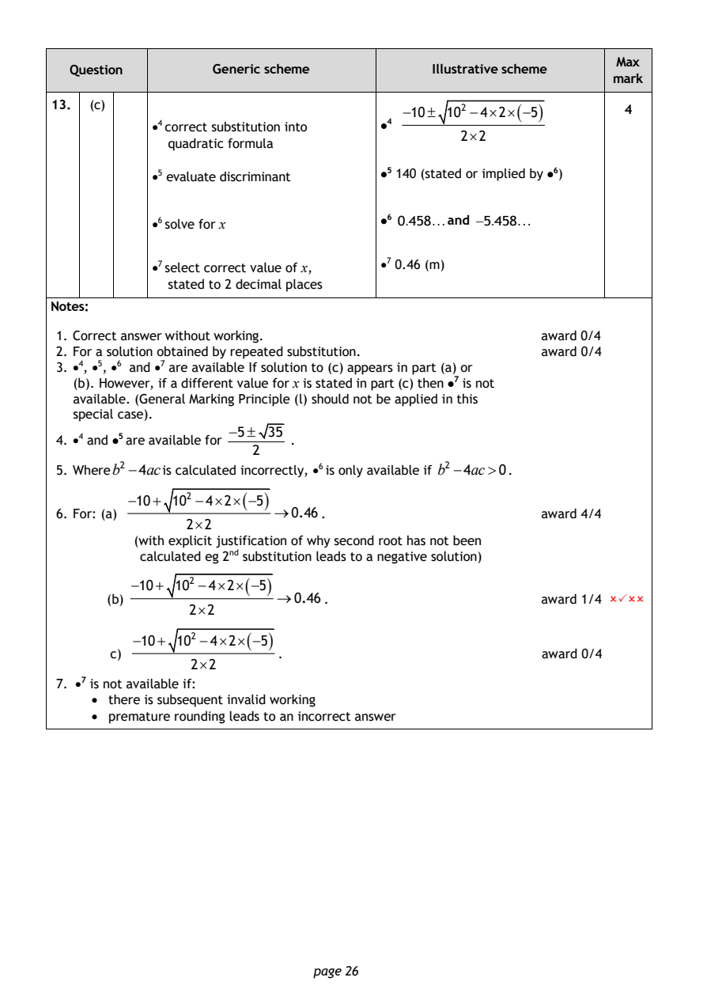
Selectable page text
Max
Question Generic scheme Illustrative scheme
mark
13. (c) −10± 10² −4×2×(−5) 4
•4 correct substitution into •4
2×2
quadratic formula
•5 evaluate discriminant •5 140 (stated or implied by •⁶)
•6 solve for x •6 0.458 and −5.458
•7 select correct value of x, •7 0.46 (m)
stated to 2 decimal places
Notes:
1. Correct answer without working. award 0/4
2. For a solution obtained by repeated substitution. award 0/4
3. •⁴, •5, •6 and •⁷ are available If solution to (c) appears in part (a) or
(b). However, if a different value for x is stated in part (c) then •⁷ is not
available. (General Marking Principle (l) should not be applied in this
special case).
−5± 35
4. •⁴ and •⁵ are available for .
2
5. Whereb²−4acis calculated incorrectly, •⁶ is only available if b²−4ac>0.
−10+ 10² −4×2×(−5)
6. For: (a) →0.46. award 4/4
2×2
(with explicit justification of why second root has not been
calculated eg 2ⁿ^{d} substitution leads to a negative solution)
−10+ 10² −4×2×(−5)
(b) →0.46. award 1/4
2×2
−10+ 10² −4×2×(−5)
c) . award 0/4
2×2
7. •⁷ is not available if:
• there is subsequent invalid working
• premature rounding leads to an incorrect answer
page 26PDF page 23
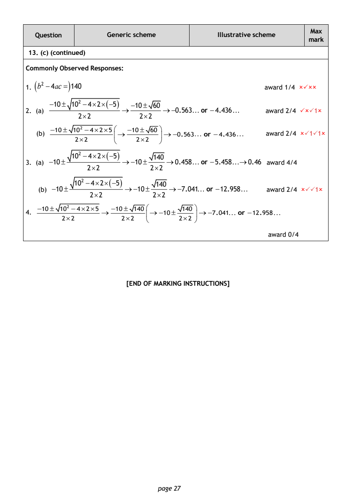
Selectable page text
Max
Question Generic scheme Illustrative scheme
mark
13. (c) (continued)
Commonly Observed Responses:
( )
1. b² −4ac = 140 award 1/4
−10± 10² −4×2×(−5) −10± 60
2. (a) → →−0.563or −4.436 award 2/4 1
2×2 2×2
−10± 10² −4×2×5 −10± 60
(b) → →−0.563or −4.436 award 2/4 11
2×2
2×2
10² −4×2×(−5) 140
3. (a) −10± →−10± →0.458or −5.458 →0.46 award 4/4
2×2 2×2
10² −4×2×(−5) 140
(b) −10± →−10± →−7.041or −12.958 award 2/4 1
2×2 2×2
−10± 10² −4×2×5 −10± 140 140
4. → →−10± →−7.041or −12.958
2×2 2×2
2×2
award 0/4
[END OF MARKING INSTRUCTIONS]
page 27